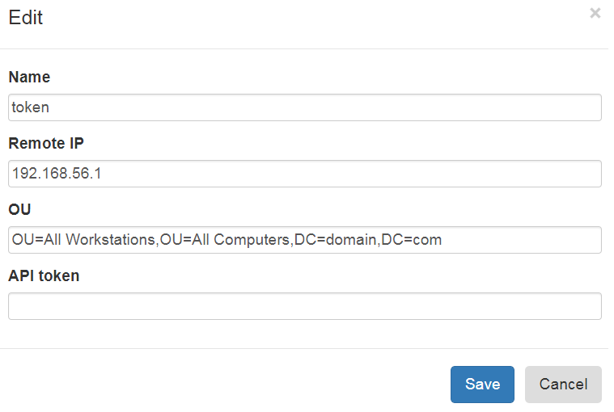

LAPS Portal administration¶
Accessing admin console¶
Right after initial setup LAPS Portal uses port 8443, open LAPS Portal in your browser https://host:8443. Select built-in authorization and login with admin/admin
Warning
Change default password in profile settings menu
Active Directory integration¶
Go to Administration->Communications->LDAP and setup following settings:
- bind user account which has access rights to get attributes ms-Mcs-AdmPwd and modify ms-Mcs-AdmPwdExpirationTime
- FQDN name of AD servers (it is allowed to set several servers divided by “;”“)
Warning
ms-Mcs-AdmPwd is a special attribute which could be accessed via ldap over SSL thats why it is impossible to use IP addresses
- Base OU for computers, users and groups searching
- Attribute of a computer which could contains an user or a group (group nesting is not supported) which will allow to get LAPS password of the computer. This mechanism does not connected with access control subsystem based on groups and containers
You can enable scheduled password rotation for bind user
Certificates¶
Go to Administration->Communications->Certificates and import AD servers certificate and CA certificates (all certificate chain must be imported). In case of other integration which uses ssl/tls protocol like LinOTP HTTP API, FortiAuthenticator and others please do not forget import theirs certificates as well. LAPS Portal supports X.509 DER encoded certificates.
After fresh install LAPS Portal generates self-signed certificate which has alias “jetty”. To replace self-signed certificate:
- Administration -> Communications ->Certificates press “Generate CSR” button, enter DNS name of host where LAPS Portal is located and save generated certificated signing request file.
- Generate certificated signed by externals CA using generated CSR file
- Import CA’s certificate
- Import certificate signed by CA, set as alias DNS name of server
Warning
After certificates import do not forget to restart LAPS Portal
Access rights management¶
Go to Administration->Security->Groups and setup user group to OU mappings. You must use distinguished names of groups and OUs. Members of group will be able to get LAPS passwords of computers in the OU and sub OUs.
It is possible to import CSV file with groups and OUs mapping, file must be in following portal:
name of element;group DN;OU DN
forexample:
Boston;CN=LAPS_Boston,OU=Groups,DC=domain,DC=com;OU=Boston,OU=Computers,DC=domain,DC=com
Import the file
Authentication setup¶
Go to Administration->Security->Authentication and setup authentication parameters:
Require or not password check for internal LAPS Portal users. If you switch off this requirement then you must enable one time passwords (OTP) validation for this type of users!
Require or not password check for Active Directory users. Such approach could be recommended in case you will allow to use LAPS Portal from untrusted environment to eliminate risk of password stealing. If you switch off this requirement then you must enable one time passwords (OTP) validation for this type of users!
Require or not OTP validation for AD users
Require or not OTP validation for users stored in LAPS Portal
- Type of OTP provider:
- linotp provider is used for integration with LinOTP via http API. You must setup LinOTP valudation URL
- radius provider. You must configure address, shared secret and authentication type: chap, mschap, pap, peap, eap-md5, eap-tls, eap-mschap
- fortiauth provider for integration with FortiAuthenticator
- totp provider which is built in to LAPS Portal. You can use this provider in case you do not have in your environment OTP system to enable two factor authentication for LAPS Portal. If you use this type of TOTP provider you will need to use mobile application like FreeOTP, Google Authenticator, etc.
Capcha generation requirements: capcha alphabet, unsuccessfull login attempts after capcha will be required
LAPS passwords expiration¶
Go to Administration->Security->Extra and configure automatic LAPS password rotation. After access to ms-Mcs-AdmPwd by any user LAPS portal will modify ms-Mcs-AdmPwdExpirationTime attribute. You can also configure maximum allowed time difference between current time and value which LAPS Portal user can setup in expire field.
LAPS Portal API and tokens¶
If you have external systems like Endpoint Detection and Response which require access to passwords managed by LAPS you can use API provided by LAPS portal. To provide access LAPS Portal API you must configure access token. Each access token could be bind to specific IP address and additionally restricted by OU
To get LAPS password with help of API you should use GET request to /passwordbytoken/{pc} and pass token in X-Auth cookie
GET /passwordbytoken/computer123
Content-Type: application/json
Cookie: X-Auth=APITOKEN
LAPS Portal and SIEM integration¶
Go to Administration->Communications->Syslog and set IP of syslog receiver. LAPS Portal send logs in CEF format via UDP.
Extra settings¶
Go Administration->Communications->Extra and configure:
- User access token duration (maximum time of users inactivity)
- Some sensitive API are protected by internal DoS filter. You can restrict maximum number of requests per second to this sensitive API related to authentication, password accessing
- HTTP header which contains information of client IP address if LAPS Portal located behind reverse proxy or balancer
Backup passwords managed by LAPS
At Administration->System->Laps Backup you can configure automatic backup of passwords managed by LAPS. You can use saved passwords in case of AD unavailability. You can configure:
- сron exporession
- password which will be used to encrypt ZIP archive with computers passwords
- base DN of computers
- maximum count of archive files